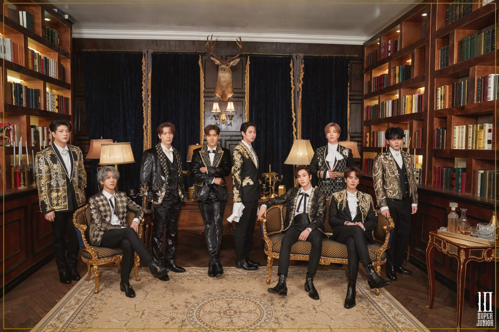

Profil
Super Junior / SUJU (슈퍼주니어) adalah salah satu Boy Band legenda asal Korea Selatan yang bernaung dibawah label SM Entertainment. Grup ini awalnya beranggotakan 13 personel yaitu Leetuk (leader), Heechul, Han Geng, Yesung, Kang-In, Shindong, Sungmin, Eunhyuk, Donghae, Siwon, Ryewook, Kibum dan Kyuhyun.
Super Junior memulai debutnya diprogram musik SBS pada tanggal 6 November 2005 dengan lagu Twins (Knock Out)
.
Suju baru menuai sukses pada tahun 2007 setelah meluncurkan album Don’t Don. Mereka semakin bersinar pada tahun 2009 setelah merilis album baru bertajuk Sorry Sorry pada bulan Maret.
Dengan lagu tersebut, mereka berhasil meraih posisi pertama diberbagai tanggal lagu Korea dan album tersebut juga meraih penghargaan Daesang di Golden Disk Awards.
Pada tahun 2010, hanya ada 11 anggota yang aktif, 2 orang diantaranya yaitu Han Geng memiliki masalah hukum dengan SM Entertainment sehingga menyebabkan Han Geng keluar dari Super Junior (sekarang besolo karir di kancah hiburan Mandarin-Pop). Kibum juga keluar karena fokus pada karir seni peranya. Namun Kibum baru resmi mengakhiri kerjasama dengan SM pada tanggal 18 Agustus 2015 lalu. Mulai bulan November 2015, Super Junior beraktifitas dengan 6 member saja yaitu Lee Teuk, Heechul, Yesung, Kangin, Ryeowook dan Kyuhyun. Sedangkan Shindong, Sungmin, Siwon, Eunhyuk dan Donghae sementara hiatus dulu karena sedang menjalani wajib militer.
Pada tanggal 3 Maret 2021 nanti, Super Junior akhirnya akan comeback dengan mengeluarkan album ke 10 bertajuk ‘The Renaissance’. Album tersebut juga ditujukan untuk memperingati ulang tahun Super Junior yang ke 15. Namun sayang, pada comeback kali ini Super Junior hanya ber 9 saja. Sungmin hiatus untuk sementara. Sedangkan Kangin telah keluar dari Super Junior
Sub-Unit
Super junior memiliki beberapa sub-unit:
Super Junior - K.R.Y (2006)
Super Junior - T (2007)
Super Junior - M (2008)
Super junior - Happy (2008)
Super Junior D&E (2011)
Namun, dari beberapa sub-unit tersebut hanya K.R.Y dan D&E saja yang masih aktif hingga sekarang.